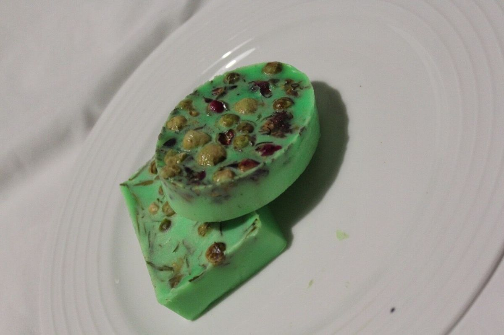
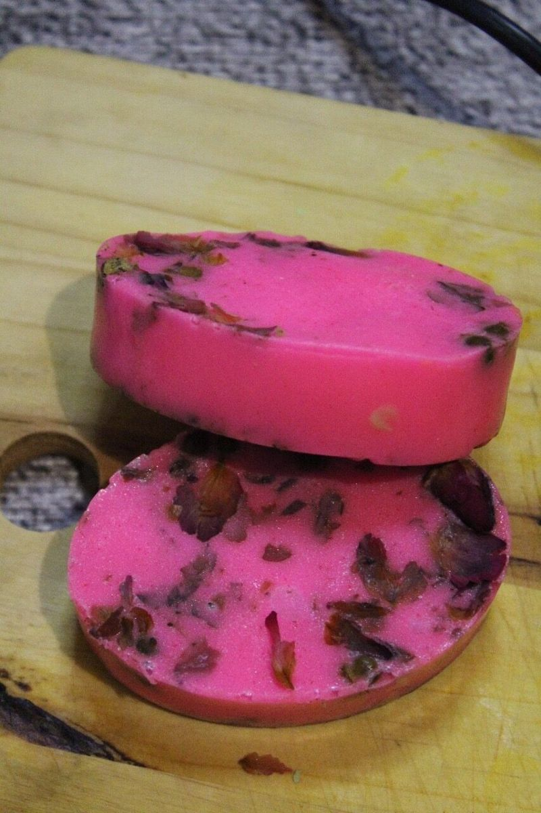
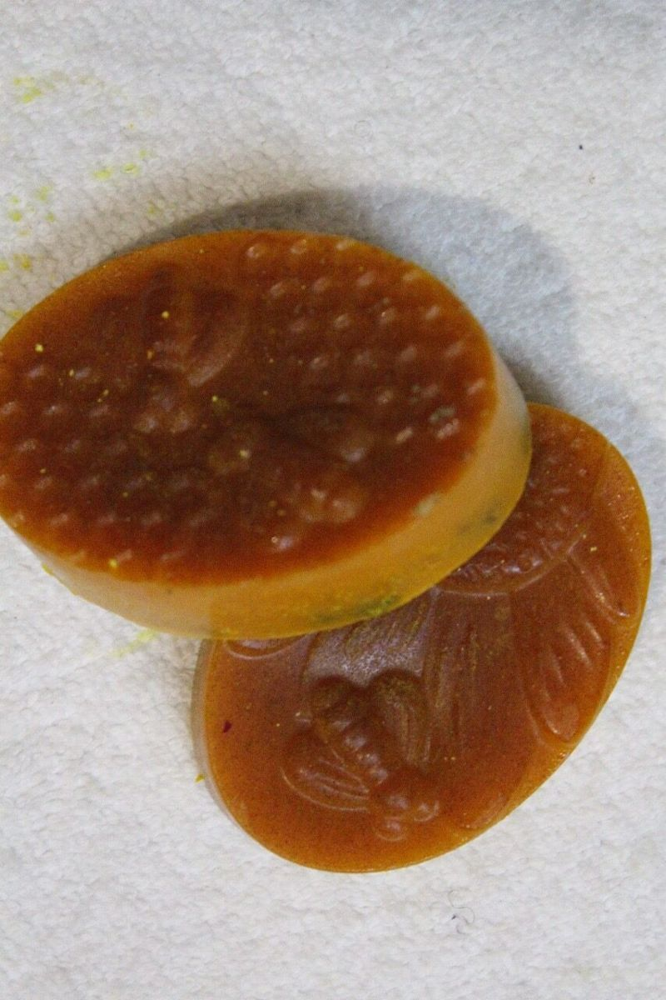

Aloe de Gen
Green handmade botanical soap.
R35Current catalogue
The original three-product catalogue is the starting point for the expanded LizDeLux Botanicals range.
3 soaps in the collection

Green handmade botanical soap.
R35
Pink handmade soap decorated with botanical material.
R35
Amber handmade soap with bee and honeycomb details.
R35Rebrand expansion
Final ingredients, benefits and prices will be added only after the formulations and product records have been confirmed.
Make a product enquiryA little more detail
Send a product enquiry or call 082 654 0809. Products are made in small batches, so stock must be confirmed.
Body butters, scrubs and bath products are planned. Formulations, ingredients and prices will be shared once confirmed.
Contact us about your area. The business serves Ga-Sekhukhune and Pretoria; delivery costs and arrangements are confirmed separately.